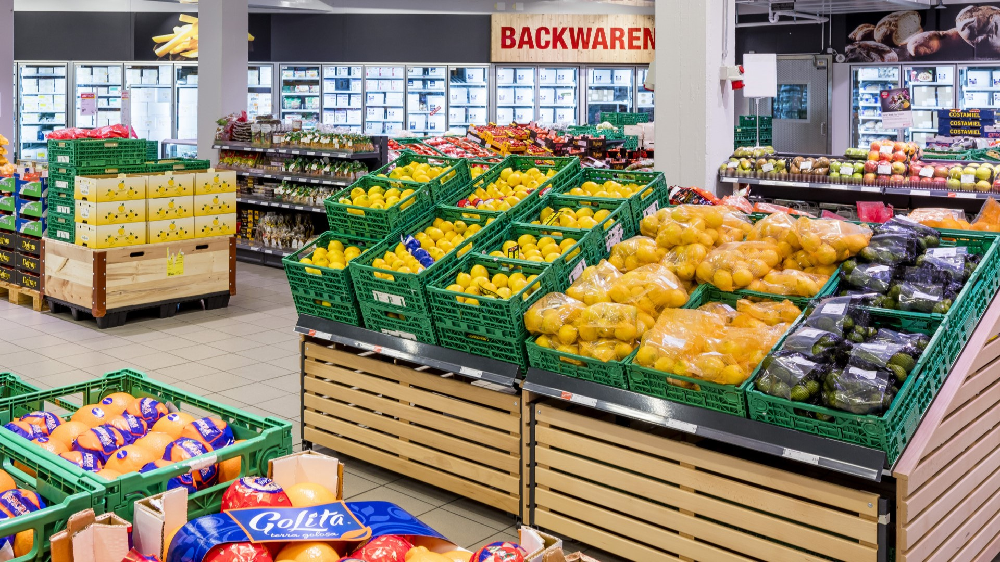

Detail
Vidste I, at madspild er en af de største udfordringer, supermarkeder står over for? Det er ikke kun et spørgsmål om økonomi, men også omdømme og bæredygtighed.
Ved at begrænse madspild kan vi ikke kun forbedre vores bundlinje, men også mindske den miljømæssige påvirkning og hjælpe med at bekæmpe fødevaremangel.
Der er mange måder, vi kan reducere madspildet på, som f.eks. at købe varer i mindre mængder, sælge varer tæt på udløbsdatoen til nedsat pris og donere overskydende mad til lokale organisationer, der hjælper de trængende. Lad os alle arbejde sammen for at begrænse madspild og skabe en mere bæredygtig fremtid!